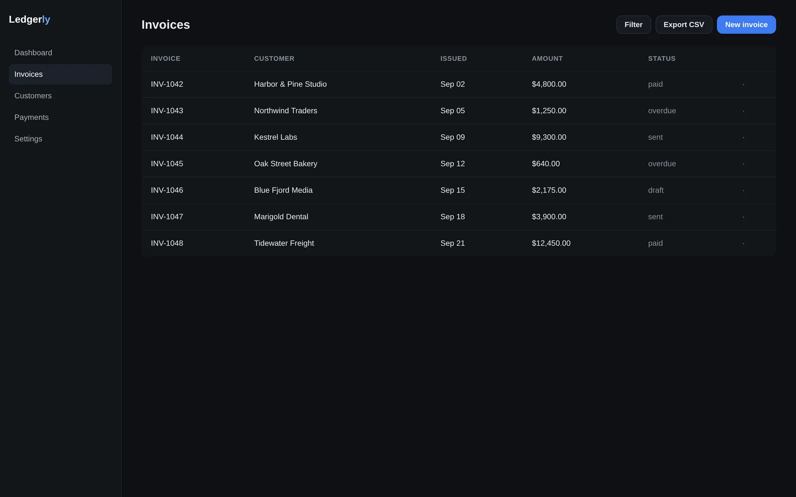
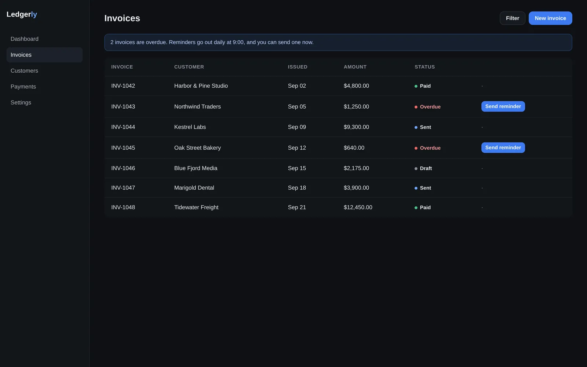

This week was about trust in the numbers. A payment is recorded exactly once no matter how often the provider retries, overdue reminders are sent for the first time in months, and an invoice's total comes from one place instead of three. Customers see all of it on a clearer invoice list.
Before, the payment provider's webhook was handled inside the web request that received it. When the provider didn't hear back fast enough it sent the same event again, and each copy created its own payment row, so a customer could appear to have paid twice. Now the web server only stores the event and answers right away. A queue worker records the payment, and a second copy of the same event is recognised and skipped.
flowchart TB
P([Provider sends webhook]) --> H[Web request: record payment]
H -->|slow reply| RT[Provider retries same event]
RT --> H2["Web request: record payment again"]
H2 -.-> D["Duplicate payment row"]
style D stroke-dasharray: 4 3
flowchart TB
P([Provider sends webhook]) --> S["Store event, reply 200"]
S --> Q[(job queue)]
Q --> W[Worker: record payment]
W -->|event id seen before| K[Skip]
W -->|new event| R[(payments)]
sequenceDiagram
participant P as Provider
participant API as /webhooks/payments
participant W as Worker
participant DB as Postgres
P->>API: event evt_91 (attempt 1)
API->>DB: INSERT webhook_events ON CONFLICT DO NOTHING
API-->>P: 200
P->>API: event evt_91 (attempt 2)
API->>DB: INSERT … ON CONFLICT DO NOTHING (no row)
API-->>P: 200
W->>DB: INSERT payments (event_id unique)
Note over W,DB: one job per stored event, so one payment
webhook_events.provider_event_id is unique; the handler's insert is ON CONFLICT DO NOTHING, so a replay stores nothing and queues nothing.Customers with overdue invoices were supposed to get a reminder email every morning. They weren't getting anything: the server job that sent them had a typo that stopped it from ever running. Reminders now go out from the same queue as payments, at most once a day per invoice, and the invoice list shows which invoices are overdue with a button to send one now.
| Job | Before (server crontab) | After (queue) | What changed |
|---|---|---|---|
| Overdue reminders | daily curl → /cron/reminders | reminders.daily 09:00 local | Fired 212 times; a stray quote meant none reached the app. |
| Retry failed payments | hourly curl | payments.retry hourly | Same logic, now visible in the job dashboard. |


-H "x-cron-secret: "…": the extra quote made every run a shell syntax error, so cron logged the firing and nothing else.invoices.last_reminded_on is set in the same transaction that queues the email, so a crash can't send without recording it.The invoice total was stored in three places: on the invoice, on the PDF record and in the payment request. Editing a line item updated some of them, so a customer could open an invoice that said one amount and a PDF that said another. Now the total is calculated from the line items whenever it's shown, and the stored copies are gone.
flowchart LR
L[(line_items)] -. "copied on save" .-> I[(invoices.total)]
L -. "copied on render" .-> F[(pdfs.total)]
L -. "copied on send" .-> P[(payment_requests.amount)]
flowchart LR
L[(line_items)] -->|SUM at read time| V[invoice_totals view]
V --> I[Invoice page]
V --> F[PDF]
V --> P[Payment request]
| Mismatch | Invoices | Cause |
|---|---|---|
| PDF total ≠ line items | 29 | line item edited after the PDF was rendered |
| Payment request ≠ line items | 12 | discount applied after sending |
invoice_snapshots, so what the customer received is still provable.The toolbar's Export CSV button re-ran the whole report on every click, which locked the page for up to 20 seconds on large accounts. Export moved into the ⋯ menu and now reuses the list that's already loaded.
Every CI run reinstalled all dependencies from scratch. Caching them cut a typical run from 7m 12s → 3m 40s.
PDFs used the server's timezone, so an invoice issued late in the evening could carry the next day's date. They now use the account's timezone, like the rest of the app.